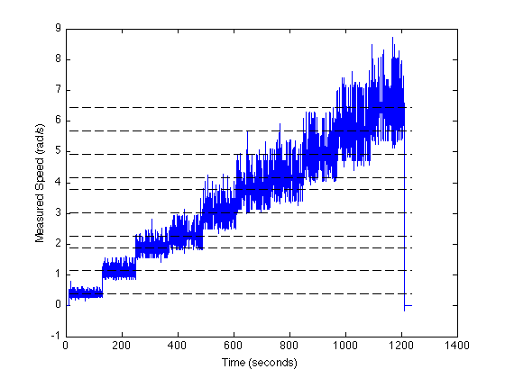
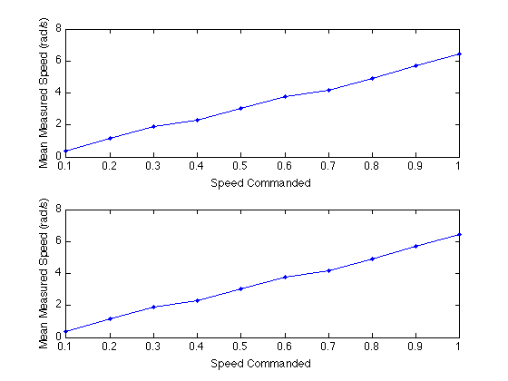
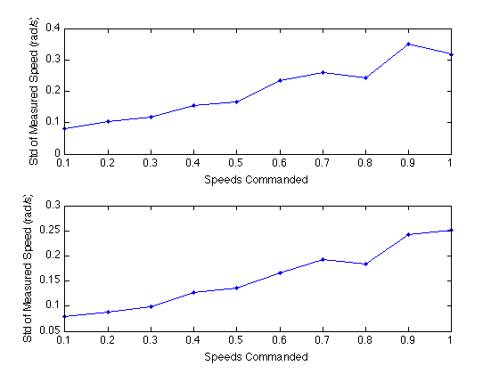

Contents
% Final Project - Encoder Data Analysis % William Woodall & Michael Carroll % May 6th, 2011 % MECH 7710 Optimal Control and Estimation clear; clc; close all; format loose; format short;
Encoders Data Analysis
importfile('encoders_data.csv'); for ii=0:9 speeds{ii+1} = encoders_data((ii*3000)+500:(ii*3000)+3200, :); end for ii=1:10 speed_means{ii}(1) = mean(speeds{ii}(:,2)); speed_stds{ii}(1) = std(speeds{ii}(:,2)); speed_means{ii}(2) = mean(speeds{ii}(:,3)); speed_stds{ii}(2) = std(speeds{ii}(:,3)); end time = encoders_data(:,1)*1e-9; time = time - time(1);
Left Wheel Speeds with Means
figure(1); plot(time, encoders_data(:,2)); hold on; for ii=1:10 plot([time(1) time(end)], [speed_means{ii}(1) speed_means{ii}(1)], ... 'LineStyle', '--', 'Color', 'k'); end ylabel('Measured Speed (rad/s)'); xlabel('Time (seconds)');
Right Wheel Speeds with Means
figure(2); plot(time, encoders_data(:,2)); hold on; for ii=1:10 plot([time(1) time(end)], [speed_means{ii}(2) speed_means{ii}(2)], ... 'LineStyle', '--', 'Color', 'k'); end ylabel('Measured Speed (rad/s)'); xlabel('Time (seconds)');
Means by commanded speed
test_speeds = 0.1:0.1:1.0; figure(3); for ii=1:10 left_means(ii) = speed_means{ii}(1); right_means(ii) = speed_means{ii}(2); end subplot(2,1,1); plot(test_speeds, left_means, '.-'); ylabel('Mean Measured Speed (rad/s)'); xlabel('Speed Commanded'); subplot(2,1,2); plot(test_speeds, right_means, '.-'); ylabel('Mean Measured Speed (rad/s)'); xlabel('Speed Commanded');
STD by commanded speed
test_speeds = 0.1:0.1:1.0; figure(4); for ii=1:10 left_stds(ii) = speed_stds{ii}(1); right_stds(ii) = speed_stds{ii}(2); end subplot(2,1,1); plot(test_speeds, left_stds, '.-'); ylabel('Std of Measured Speed (rad/s)'); xlabel('Speeds Commanded'); subplot(2,1,2); plot(test_speeds, right_stds, '.-'); ylabel('Std of Measured Speed (rad/s)'); xlabel('Speeds Commanded');